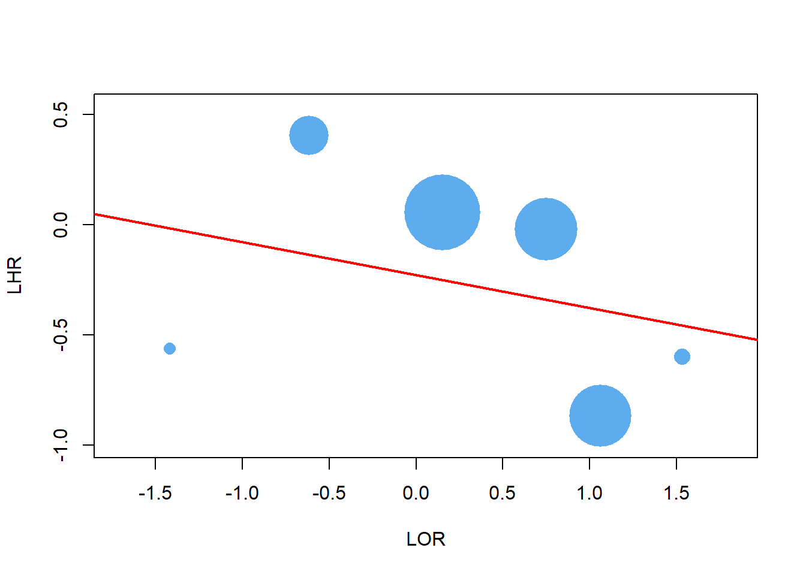
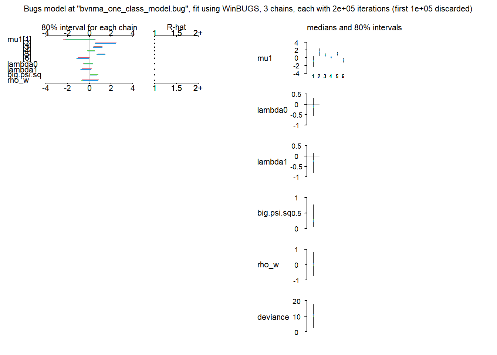
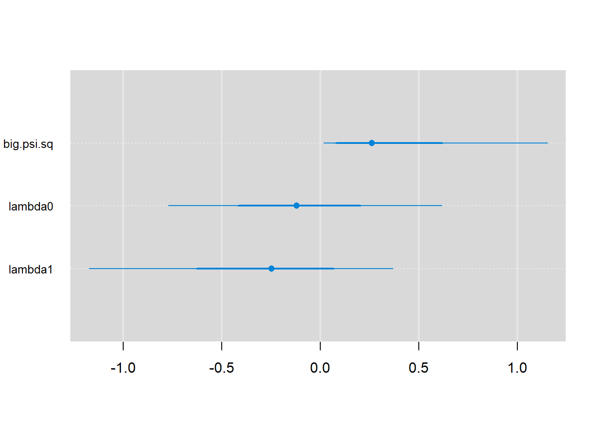
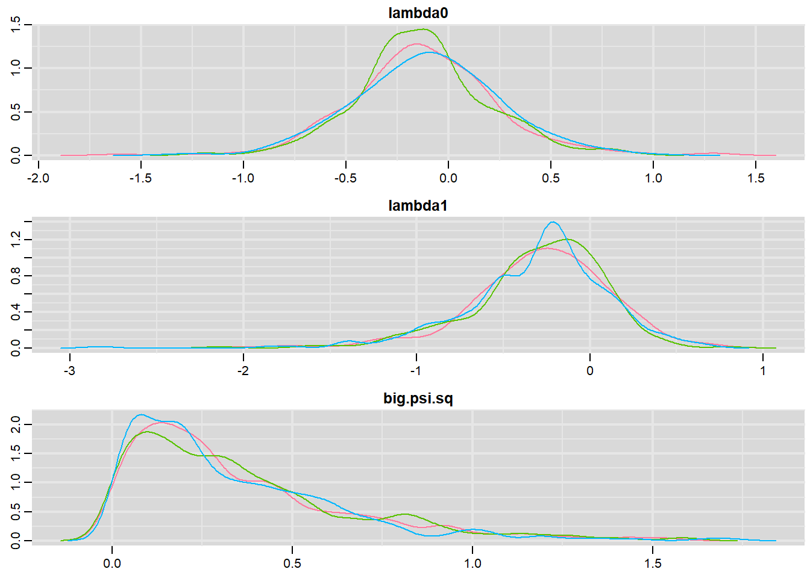

wald.ci <- function(x, n, ci.lev=.95) {
p <- x/n
se<- sqrt(p*(1-p)/n)
z <- qnorm((1+ci.lev)/2) %>% abs
p + c(-1,1)*z*se
}
#-------------------------------------------------------------------------------
lor.sd <- function(s1, n1, s2, n2) {
# get log OR and SD
f1 <- n1 - s1
f2 <- n2 - s2
# x - matrix of two columns of successes (s) and failures (f)
x <- rbind(c(s1, f1),
c(s2, f2))
D <- factor(c("s","f"), levels=c("f","s"))
m <- glm(x~D, family=binomial) %>% summary
m$coefficients[2,1:2]
}
#-------------------------------------------------------------------------------
lhr.sd <- function(hr, low, upp) {
# approx log HR and SD
loghr <- log(hr)
sd <- ((log(c(low,upp)) - loghr) / qnorm(.975)) %>% abs %>% sqrt %>% mean
return(c("loghr"=loghr, "sd"=sd))
}data.raw <- readxl::read_xlsx(path = 'PRROC.xlsx', range = cell_cols('A:L'))
data.use <- data.raw %>% dplyr::filter(one_class_mod=='Y')
data.use %>% kbl() %>% kable_styling()| study | res_a | n_a | res_b | n_b | hr_pfs_ab | hr_pfs_low | hr_pfs_upp | code_a | code_b | one_class_mod | des |
|---|---|---|---|---|---|---|---|---|---|---|---|
| 1 | 1 | 34 | 4 | 36 | 0.570 | 0.330 | 0.980 | 2 | 1 | Y | Konstantinopoulos PA, Lancet Oncol. 2020 |
| 2 | 14 | 61 | 2 | 33 | 0.550 | 0.350 | 0.900 | 2 | 1 | Y | Lheureux S, Lancet. 2021 |
| 9 | 55 | 248 | 14 | 118 | 0.980 | 0.730 | 1.310 | 2 | 1 | Y | ESMO 2019 |
| 11 | 32 | 221 | 28 | 221 | 1.057 | 0.854 | 1.309 | 2 | 1 | Y | CORAIL |
| 12 | 49 | 179 | 21 | 182 | 0.420 | 0.320 | 0.530 | 2 | 1 | Y | AURELIA |
| 13 | 9 | 119 | 15 | 114 | 1.500 | 1.200 | 1.900 | 2 | 1 | Y | NINJA |
ns <- data.use %>% nrow
y <- se <- matrix(NA, ncol=2, nrow=ns)
for (i in 1:ns) {
s1 <- data.use$res_a[i]
n1 <- data.use$n_a[i]
s2 <- data.use$res_b[i]
n2 <- data.use$n_b[i]
hr <- data.use$hr_pfs_ab[i]
low<- data.use$hr_pfs_low[i]
upp<- data.use$hr_pfs_upp[i]
lor_sd <- lor.sd(s1,n1,s2,n2)
lhr_sd <- lhr.sd(hr,low,upp)
y[i,1:2] <- c(lor_sd[1], lhr_sd[1])
se[i,1:2] <- c(lor_sd[2], lhr_sd[2])
} # end of for (i in 1:ns)
## Naive linear plot
symbols(x=y[,1], y=y[,2], circle = (data.use$n_a+data.use$n_b)/pi, inches=1/3,
ann=T, bg='steelblue2', fg=NULL, xlab='LOR', ylab='LHR')
lm(y[,2]~y[,1]) %>% abline(col='red', lwd=2)
This is based on formulae (1) and (2) of https://www.ncbi.nlm.nih.gov/pmc/articles/PMC7065251/
### Model definition
bvnma_one_class_model <- function() {
## Data to be specify in the input
#-------------------------------------------------------------------------------
# ns - number of studies
# y - ns x 2 matrix, each row shows the treatment effect in the surrogate endpoint (1st element) and main endpoint (2nd element)
# se - ns x 2 matrix, each row shows the (study-specific) se of the surrogate (1st element) and main endpoint (2nd element)
## Parameter to be monitored
# mu1
## Parameter to be monitored for surrogacy assessment
# lambda0 - intercept, ideally being 0
# lambda1 - slope, ideally >< 0
# big.psi.sq - conditional variance, ideally being 0
#-------------------------------------------------------------------------------
# within study precision matrix
for(i in 1:ns) {
prec_w[i,1:2,1:2] <- inverse(Sigma[i,1:2,1:2])
# covariance matrix for the i-th study
Sigma[i,1,1] <- pow(se[i,1], 2)
Sigma[i,2,2] <- pow(se[i,2], 2)
Sigma[i,1,2] <- se[i,1] * se[i,2] * rho_w#[i]
Sigma[i,2,1] <- se[i,1] * se[i,2] * rho_w
}
# Random effects model
for(i in 1:ns) {
y[i,1:2] ~ dmnorm(mu[i,1:2], prec_w[i,1:2,1:2])
# product normal formulation for the between study part
mu[i,1] <- mu1[i]
mu1[i] ~ dnorm(0, a)
# mu[i,1] <- dnorm(0, a)
mu[i,2] ~ dnorm(tmp[i], inv.big.psi.sq)
tmp[i] <- lambda0 + lambda1 * mu1[i]
# tmp[i] <- lambda0 + lambda1 * mu[i,1]
#rho_w[i] <- dunif(-1, 1)
} # end of for(i in 1:ns)
lambda0 ~ dnorm(0, a)
lambda1 ~ dnorm(0, a)
inv.big.psi.sq <- 1/ big.psi.sq # putting 1/big.psi.sq directly into dnorm(,) not work!
big.psi.sq <- abs(tmp2)
tmp2 ~ dnorm(0, b)# dnorm(0, b)I(0,) # the latter form does not work!
rho_w ~ dunif(-1,1) #-.05 #dunif(-1,1) # giving rho_w prior either not work or not converge
a <- 0.001
b <- 2
# # predict Y2 for given Y1
# for(i in 1:nn) { #nn is number of new y1n
# y2n ~ dnorm(mu2n, pre2n)
# m2n <- mu
# }
} # end of bvnma_one_class_model
write.model(bvnma_one_class_model, 'bvnma_one_class_model.bug')
### Parameters to monitor
parameters_one_class_model <- c('mu1', 'lambda0', 'lambda1','big.psi.sq', 'rho_w')
# ns <- 5 # number of studies
### Inits
inits_one_class_model <- function() {
list(
"mu1"= rnorm(ns, 0, 1),
# "mu"= c(rnorm(5, 0, 1), rep(NA, 5)) %>% matrix(nrow=5, byrow = F),
"lambda0"= rnorm(1, 0, 1),
"lambda1"= rnorm(1, 0, 1),
"big.psi.sq"= rnorm(1, 0, 1) %>% abs,
# rho_w=runif(5, -1, 1)
"rho_w"=runif(1, -1, 1)
)
} # end of inits_one_class_model
### Data
# data_one_class_model <- list(
# "ns"=ns,
# "y"=c(1.46, 2.17, 1.1, 2.22, 0.58, 1.29, 1.41, 2.63, 1.36, 3) %>% matrix(nrow=ns, byrow = T),
# "se"= c(.24, .21, .23, .2, .23, .22, .22, .25, .19, .2) %>% matrix(nrow=ns, byrow = T)
# )
data_one_class_model <- list(ns=ns, y=y, se= se)
### Run MCMC
set.seed(36)
bvnma_one_class_bug <- bugs(data = data_one_class_model, inits =
inits_one_class_model, parameters.to.save =
parameters_one_class_model,
model.file = "bvnma_one_class_model.bug",
n.chains=3, n.iter=20e4,
clearWD=T, bugs.directory="C:/Users/nguyea37/Documents/WinBUGS14")
print(bvnma_one_class_bug)## Inference for Bugs model at "bvnma_one_class_model.bug", fit using WinBUGS,
## 3 chains, each with 2e+05 iterations (first 1e+05 discarded), n.thin = 300
## n.sims = 1002 iterations saved
## mean sd 2.5% 25% 50% 75% 97.5% Rhat n.eff
## mu1[1] -0.9 1.1 -3.1 -1.6 -0.8 0.0 1.1 1 520
## mu1[2] 1.5 0.7 0.1 1.0 1.4 1.9 2.9 1 1000
## mu1[3] 0.7 0.3 0.1 0.5 0.7 0.9 1.3 1 1000
## mu1[4] 0.2 0.3 -0.4 0.0 0.2 0.3 0.7 1 730
## mu1[5] 1.1 0.3 0.5 0.9 1.1 1.3 1.6 1 1000
## mu1[6] -0.6 0.4 -1.4 -0.9 -0.6 -0.3 0.3 1 490
## lambda0 -0.1 0.3 -0.8 -0.3 -0.1 0.1 0.6 1 1000
## lambda1 -0.3 0.4 -1.2 -0.5 -0.2 0.0 0.4 1 1000
## big.psi.sq 0.3 0.3 0.0 0.1 0.3 0.5 1.2 1 1000
## rho_w 0.0 0.6 -0.9 -0.4 0.0 0.5 0.9 1 550
## deviance 10.3 6.8 -5.2 7.4 10.7 13.8 23.1 1 580
##
## For each parameter, n.eff is a crude measure of effective sample size,
## and Rhat is the potential scale reduction factor (at convergence, Rhat=1).
##
## DIC info (using the rule, pD = Dbar-Dhat)
## pD = 7.5 and DIC = 17.8
## DIC is an estimate of expected predictive error (lower deviance is better).plot(bvnma_one_class_bug)
# ### Convergence diagnostic plot
# mcmcplots::mcmcplot(bvnma_one_class_bug)
### Credible interval for selected parameters
mcmcplots::caterplot(bvnma_one_class_bug, parms = c('lambda0', 'lambda1','big.psi.sq'))
### Density plot for selected parameters
mcmcplots::denplot(bvnma_one_class_bug, parms = c('lambda0', 'lambda1','big.psi.sq'))
# ### Convert Bug obj to MCMC obj so more function can work with
# bvnma_one_class_mcmc <- bvnma_one_class_bug %>% as.mcmc.bugs
#
# bvnma_one_class_mcmc %>% geweke.plot
#
# bvnma_one_class_mcmc %>% gelman.plot
#
# bvnma_one_class_mcmc %>% autocorr.plot
#
# bvnma_one_class_bug %>% autoplot